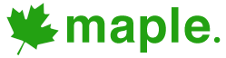

<!--

	Cool plugin to add:
	https://github.com/Norkart/Leaflet-MiniMap : DONE
	https://github.com/MrMufflon/Leaflet.Coordinates : DONE
	http://w8r.github.io/L.Control.LineStringSelect/examples/  => selectionner une portion. cool pour calculer des distances!
	http://torfuspolymorphus.github.io/leaflet.zoomhome/ => ajouter un point de retour : DONE
	https://github.com/CliffCloud/Leaflet.EasyButton => ajouter un bouton


	voir ca pour les comparaison de tuile:
	http://mc.bbbike.org/mc/?num=2&mt0=mapnik&mt1=hillshading


-->

<html>
<head>
	<meta charset="UTF-8">

	<title>maple.</title>
	<!-- necessary for JQuery -->
	<script src="https://ajax.googleapis.com/ajax/libs/jquery/1.9.1/jquery.min.js"></script>

	<!-- necessary for Leaflet -->
	<link rel="stylesheet" href="http://cdn.leafletjs.com/leaflet-0.7.1/leaflet.css" />
	<script src="http://cdn.leafletjs.com/leaflet-0.7.1/leaflet.js"></script>

	<!-- necessary for GPX -->
	<script src="js/GPXplugin/GPX.js"></script>

	<!-- necessary for minimap -->
	<link rel="stylesheet" href="js/minimap/Control.MiniMap.css" />
	<script src="js/minimap/Control.MiniMap.js" type="text/javascript"></script>

	<!-- Necessary for Coordinates-->
	<script type="text/javascript" src="js/coordinates/Leaflet.Coordinates-0.1.4.src.js"></script>
	<link rel="stylesheet" href="js/coordinates/Leaflet.Coordinates-0.1.4.css"/>

	<!-- Necessary for ZoomHome-->
	<link rel="stylesheet" href="http://maxcdn.bootstrapcdn.com/font-awesome/4.3.0/css/font-awesome.min.css"/>
	<script src="js/zoomhome/leaflet.zoomhome.min.js"></script>
	<link rel="stylesheet" href="js/zoomhome/leaflet.zoomhome.css"/>

	<!-- Necessary for EasyButton-->
	<link rel="stylesheet" href="js/EasyButton/style.css"/>
	<script src="js/EasyButton/easy-button.js"></script>


	<!-- necessary for Bootbox -->
	<link rel="stylesheet" type="text/css" href="js/bootstrap/css/bootstrap.css">
	<script src="js/bootstrap/js/bootstrap.min.js"></script>
	<script src="js/bootbox/bootbox.js"></script>

	<!-- necessary for ActiveLayers -->
	<script src="js/activeLayers/ActiveLayers.js"></script>

	<!-- necessary for ESRI skins -->
	<script src="http://cdn-geoweb.s3.amazonaws.com/esri-leaflet/1.0.0-rc.6/esri-leaflet.js"></script>


	<!-- necessary for spin wheel while waiting gpx loading -->
	<script src="js/spin/spin.js"></script>
	<script src="js/Leaflet.Spin/leaflet.spin.js"></script>

	<!-- necessary to load image at their positions -->
	<script src="js/imageinfo/exif.js"></script>
	<script src="js/imageinfo/binaryajax.js"></script>
	<script src="js/imageinfo/imageinfo.js"></script>

	<!-- necessary for this project -->
	<script src="js/functions.js"></script>


</head>
<body style="width:100%; height:100%; margin:0;" >
	<!-- define a DIV into which the map will appear. Make it take up the whole window -->
	<div style="width:100%; height:100%" id="map"></div>
<script type='text/javascript'>


DEFAULT_POSITION = [60.1708, 24.9375];
DEFAULT_ZOOM = 15;
SPLIT_CHAR = '|';
REPLACE_CHAR = '__';
DEFAULT_MARKER_DESCRIPTION = "This marker has nothing to say.";

var regularIcon = L.icon({
	iconUrl: 'icons/iconblue.png',
	iconSize:     [40, 40], // size of the icon
	iconAnchor:   [20, 40], // point of the icon which will correspond to marker's location
	popupAnchor:  [0, -45]
});


var photoIcon = L.icon({
	iconUrl: 'icons/iconphoto.png',
	iconSize:     [40, 40], // size of the icon
	iconAnchor:   [20, 40], // point of the icon which will correspond to marker's location
	popupAnchor:  [0, -45]
});


var positionCircle = L.circle(DEFAULT_POSITION, 10, {
		weight: 0,
		color: '#0000BB',
		fillColor: '#0000BB',
		fillOpacity: 0.1
});


// from url arguments, the gpx file to load
gpxArgument=gup('gpx');
gpxFilesToLoad = false;

if(gpxArgument){
	gpxList = gpxArgument.split(SPLIT_CHAR);
	gpxFilesToLoad = true;
}


// getting position from URL argument
positionArgument = gup('position');
if(positionArgument){
	positionSplit = positionArgument.split(SPLIT_CHAR);

	specificPosition = [ parseFloat(positionSplit[0]), parseFloat(positionSplit[1]) ];
	specificZoom = positionSplit.length==3?parseInt(positionSplit[2]):DEFAULT_ZOOM;

}


// getting the marker from URL (if any)
var specificMarker = 0;
var markersArray = [];
MarkerIndex = 1;

// checking for n markers
while(gup('marker' + MarkerIndex)){
	markerArgument = gup('marker' + MarkerIndex);
	markerData = markerArgument.split(SPLIT_CHAR);

	var re = new RegExp(REPLACE_CHAR,"g");
	markerText = markerData.length==3?decodeURIComponent(markerData[2]).replace(re, ' '):DEFAULT_MARKER_DESCRIPTION;

	tmpMarker = L.marker([ parseFloat(markerData[0]) , parseFloat(markerData[1]) ], {icon: regularIcon}).bindPopup( markerText );
	tmpMarker.on('dblclick', removeMarker);

	markersArray.push(tmpMarker);


	MarkerIndex ++;
}


// from url arguments, the image to load and display
imageArgument = gup('image');
imageFilesToLoad = [];
imagesInUrl = []

if(imageArgument){
	imagesInUrl = imageArgument.split(SPLIT_CHAR);
}


// displaying the control buttons or not
// default value is yes
// 0 means no
var showControls = 1;
controlArgument = gup('controls');
if(controlArgument){
	showControls = parseInt(controlArgument);
}


// creating the main map
var map = new L.Map('map',  {zoomControl: false, center: new L.LatLng(0, 0), zoom: 11});
map.attributionControl.setPrefix('<a href="https://github.com/jonathanlurie/Maple" target="_blank"></a>');


// plugin that displays a little house
var zoomHome = L.Control.zoomHome();
zoomHome.addTo(map);


// display a stylish minimap
var minimapTileset = new L.TileLayer('https://{s}.tiles.mapbox.com/v4/matt.f714d988/{z}/{x}/{y}@2x.png?access_token=pk.eyJ1IjoiZHVuY2FuZ3JhaGFtIiwiYSI6IlJJcWdFczQifQ.9HUpTV1es8IjaGAf_s64VQ', {minZoom: 0, maxZoom: 13 });


// classic tilesets
var osm = new L.TileLayer('http://{s}.tile.openstreetmap.org/{z}/{x}/{y}.png', {
	maxZoom: 19,
	attribution: '&copy; <a href="http://www.openstreetmap.org/copyright">OpenStreetMap</a>'
});
var osmTransport = new L.TileLayer('http://{s}.tile.thunderforest.com/transport/{z}/{x}/{y}.png', {
	maxZoom: 19,
	attribution: '&copy; <a href="http://www.openstreetmap.org/copyright">OpenStreetMap</a>'
});
var osmTopo = new L.TileLayer('http://{s}.tile.opentopomap.org/{z}/{x}/{y}.png', {
	maxZoom: 16,
	attribution: 'Map data: &copy; <a href="http://www.openstreetmap.org/copyright">OpenStreetMap</a>, <a href="http://viewfinderpanoramas.org">SRTM</a> | Map style: &copy; <a href="https://opentopomap.org">OpenTopoMap</a> (<a href="https://creativecommons.org/licenses/by-sa/3.0/">CC-BY-SA</a>)'
	});

var arcgistopo = new L.TileLayer('http://services.arcgisonline.com/ArcGIS/rest/services/World_Topo_Map/MapServer/tile/{z}/{y}/{x}.jpg');
var cycling = new L.TileLayer('https://{s}.tile.thunderforest.com/cycle/{z}/{x}/{y}.png', {
	maxZoom: 19,
	attribution: '&copy; <a href="http://www.openstreetmap.org/copyright">OpenStreetMap</a>'
});
var mapquest = new L.TileLayer('http://otile1.mqcdn.com/tiles/1.0.0/osm/{z}/{x}/{y}.png');

// mapbox tilesets
var mapboxTerrain = new L.TileLayer('https://{s}.tiles.mapbox.com/v4/matt.f714d988/{z}/{x}/{y}@2x.png?access_token=pk.eyJ1IjoiZHVuY2FuZ3JhaGFtIiwiYSI6IlJJcWdFczQifQ.9HUpTV1es8IjaGAf_s64VQ', {
	attribution: 'Imagery from <a href="http://mapbox.com/about/maps/">MapBox</a> &mdash; Map data &copy; <a href="http://www.openstreetmap.org/copyright">OpenStreetMap</a>',
	subdomains: 'abcd'
});
var mapboxDesert = new L.TileLayer('https://{s}.tiles.mapbox.com/v4/examples.ra3sdcxr/{z}/{x}/{y}@2x.png?access_token=pk.eyJ1IjoibWFwYm94IiwiYSI6IlhHVkZmaW8ifQ.hAMX5hSW-QnTeRCMAy9A8Q', {
	attribution: 'Imagery from <a href="http://mapbox.com/about/maps/">MapBox</a> &mdash; Map data &copy; <a href="http://www.openstreetmap.org/copyright">OpenStreetMap</a>',
	subdomains: 'abcd'
});
var mapboxGreen = new L.TileLayer('https://{s}.tiles.mapbox.com/v4/katydecorah.162c3bac/{z}/{x}/{y}@2x.png?access_token=pk.eyJ1Ijoia2F0eWRlY29yYWgiLCJhIjoiNGxUd0FiRSJ9.W6JiC41LhSNbMQjuF3NGhA', {
	attribution: 'Imagery from <a href="http://mapbox.com/about/maps/">MapBox</a> &mdash; Map data &copy; <a href="http://www.openstreetmap.org/copyright">OpenStreetMap</a>',
	subdomains: 'abcd'
});
var mapboxWinter = new L.TileLayer('https://{s}.tiles.mapbox.com/v4/andreasviglakis.76e0cee7/{z}/{x}/{y}@2x.png?access_token=pk.eyJ1IjoiYW5kcmVhc3ZpZ2xha2lzIiwiYSI6IlVremRqN0kifQ.CFFJsLuWWyuhgsZTb51jWg', {
	attribution: 'Imagery from <a href="http://mapbox.com/about/maps/">MapBox</a> &mdash; Map data &copy; <a href="http://www.openstreetmap.org/copyright">OpenStreetMap</a>',
	subdomains: 'abcd'
});


// hillshading tileset
var hillshading = new L.TileLayer('http://korona.geog.uni-heidelberg.de:8004/tms_hs.ashx?x={x}&y={y}&z={z}', {opacity: 0.3});
var OpenSeaMap = L.tileLayer('http://tiles.openseamap.org/seamark/{z}/{x}/{y}.png', {
	attribution: 'Map data: &copy; <a href="http://www.openseamap.org">OpenSeaMap</a> contributors'
});

// Hillshading is the inly overlay we use
var overlays = {
	"Relief" : hillshading,
	"OpenSeaMap" : OpenSeaMap
};


// all the tilesets
var baseMaps = {
		"Mapbox Terrain" : mapboxTerrain,
		"Mapbox Desert" : mapboxDesert,
		"Mapbox Winter" : mapboxWinter,
		"Mapbox Green" : mapboxGreen,
		"OSM": osm,
		"OSM Transport" : osmTransport,
		"OSM Topo" : osmTopo,
		"OSM Cycling" : cycling,
		//"ARCGIS Topo" : arcgistopo,
		//"Mapquest" : mapquest,
		"ESRI Topographic" : L.esri.basemapLayer('Topographic', {detectRetina: true }  ),
		"ESRI Oceans" : L.esri.basemapLayer('Oceans', {detectRetina: true }),
		"ESRI DarkGray" : L.esri.basemapLayer('DarkGray', {detectRetina: true }),
		"ESRI Imagery" : L.esri.basemapLayer('Imagery'), // better without retina

};

// adding the layers to the map
//L.control.layers(baseMaps, overlays).addTo(map);


// setting a default skin
defaultSkin = "Mapbox Terrain";

// get the skin to load.
skin=gup('skin');

// skin is specified in the url
if(skin){
	//alert(skin);
	skin = skin.replace(REPLACE_CHAR, " ");


	// the specified skin does not exist
	if(!baseMaps[skin]){
		skin = defaultSkin;
	}

}else{
	// default skin
	skin = defaultSkin;
}


// display GPX tracks and adds controls
if(gpxFilesToLoad){


	// managing several gpx files, focus on the last one
	controlLayer = {};
	tracks = []

	for(i=0; i<gpxList.length; i++){
		map.spin(true);

			if( i == gpxList.length-1){
				tracks[gpxList[i]] = new L.GPX("gpx_files/" + gpxList[i], {async: true})
					.on("loaded", function(e) {

						// we do center on the last gpx, only if no specific marker is specified in url
						if(!markersArray.length && !positionArgument){
							map.fitBounds(e.target.getBounds());
							updateZoomHome();
						}

						map.spin(false);
					}).addTo(map);
			}else{

				tracks[gpxList[i]] = new L.GPX("gpx_files/" + gpxList[i], {async: true})
					.on("loaded", function(e) {
						map.spin(false);
				}).addTo(map);
			}

	}

	if(showControls){
		// add the layer with the gpx tracks
		map.addControl(  new L.Control.Layers({}, tracks)  );
	}


}


// loading and placing images
for(i=0; i< imagesInUrl.length ; i++){
	map.spin(true);
	ImageInfo.loadInfo(imagesInUrl[i], addGeoImageAfterCheck);

}


// place all the markers
for(i=0; i<markersArray.length; i++){
	map.addLayer(markersArray[i]);

	if(i == markersArray.length-1){
		map.setView(markersArray[i].getLatLng(), DEFAULT_ZOOM);
		markersArray[i].openPopup();
		updateZoomHome();
	}
}


// if a position was specified in the url, we move there
if(positionArgument){
	map.setView(specificPosition, specificZoom);
	updateZoomHome();
}


// if nothing was specified in the url, we locate
if(!gpxFilesToLoad && !markersArray.length && !positionArgument && !imagesInUrl.length){
	console.log("locate!");
	map.locate({setView: true, watch: false}) /* This will return map so you can do chaining */
		.on('locationfound', function(e){

			updateZoomHome();

		})
	.on('locationerror', function(e){
				console.log(e);
				alert("Location access denied.");

				// if locate fails, we go to default position
				map.setView(DEFAULT_POSITION , DEFAULT_ZOOM);
				updateZoomHome();

		});
}


// default map design
map.addLayer(baseMaps[skin]);


//Right click on the map activated
map.on('contextmenu', function(e) {
  //alert(e.latlng);

	lat = e.latlng.lat.toFixed(5);
	lon = e.latlng.lng.toFixed(5);
	mapleUrl = getBaseUrl() + "?marker1=" + lat + "|" + lon + "|this__place";
	gglurl = 'https://www.google.com/maps?q=' + lat + ',' + lon;

	bootbox.dialog({
  	title: "Click position",
  	message: 'Latitude longitude <h1>' + lat + " " + lon + '</h1>Quick Maple link : <br><a href="' + mapleUrl + '" target="_blank">' + mapleUrl + '</a><br><br><a href="' + gglurl + '" target="_blank">Or display this place on Google Map.</a>'
	});
});


if(showControls){

	var miniMap = new L.Control.MiniMap(minimapTileset, { toggleDisplay: true }).addTo(map);

	// necessary to get the active layer
	var control = L.control.activeLayers(baseMaps, overlays);
	control.addTo(map);


// display the mouse coordinates
L.control.coordinates({
	position:"bottomleft",
	decimals:4,
	decimalSeperator:",",
	labelTemplateLat:"Lat: {y}",
	labelTemplateLng:"Lon: {x}"
}).addTo(map);


if(gpxArgument){
	L.easyButton('fa-paw',
	  function (){
			focusOnGpxPrompt();
	  },
		'Focus on a track',
		map,
	 'pluginButton'
	);
}


// button that display the iframe sharing
L.easyButton('fa-camera-retro',
	function (){addGeoImage()},
	'Add localized image',
	map,
	"pluginButton"
)

// button that adds of remove a marker
L.easyButton('fa-map-marker',
	function (){addUpdateMarker()},
	'Add a marker',
	map,
	"pluginButton"
)


// button to localize
L.easyButton('fa-street-view',
  function (){
		localizeMe(true);
  },
	'Find me!',
	map,
 'pluginButton'
)


// button that display the iframe sharing
L.easyButton('fa-share-alt',
	function (){promptEmbedForm("link")},
	'Get a sharable link',
	map,
	"pluginButton"
)


// button that display the iframe sharing
L.easyButton('fa-code',
	function (){promptEmbedForm("embed")},
	'Get html embed code',
	map,
	"pluginButton"
)


// button that display the iframe sharing
var debugBt = L.easyButton('fa-bug',
	function (){debugIt()},
	'Debug',
	map,
	"pluginButton"
)


}


//L.control.attribution({position: 'bottomright'}).addAttribution("yeahyeahyeah").addTo(map);


</script>

</body>
</html>
